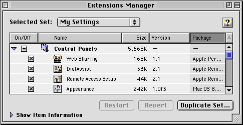
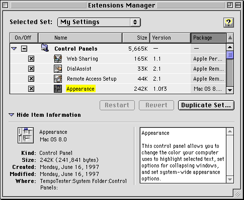

Expanding and Contracting Windows
If a control panel contains a significant number of settings that users are not likely to adjust frequently, then you can let the user show or hide those settings by expanding or contracting the window. The preferred mechanism for this is a labeled disclosure triangle that expands the window downward or contracts it upward. The triangle's label should indicate the nature of the settings (for example, "Server Settings"). Figure 6-5 shows a control panel with the disclosure triangle in the closed state.Figure 6-5 A control panel with closed disclosure triangle

Figure 6-6 shows a control panel with the disclosure triangle in the open state.
Figure 6-6 A control panel with open disclosure triangle

See "Disclosure Triangles" (page 32) for more information about disclosure triangles.
If, due to space or layout problems, you cannot have your control panel open downwards, you can use a push button to expand or contract the window's right edge.
As with the disclosure triangle, the push button label should indicate the nature of the settings. In addition, it should indicate "Show" or "Hide" as appropriate (for example, "Show Server Settings" or "Hide Server Settings").
- Note
- When a control panel is localized, it may be the left edge that expands and contracts.